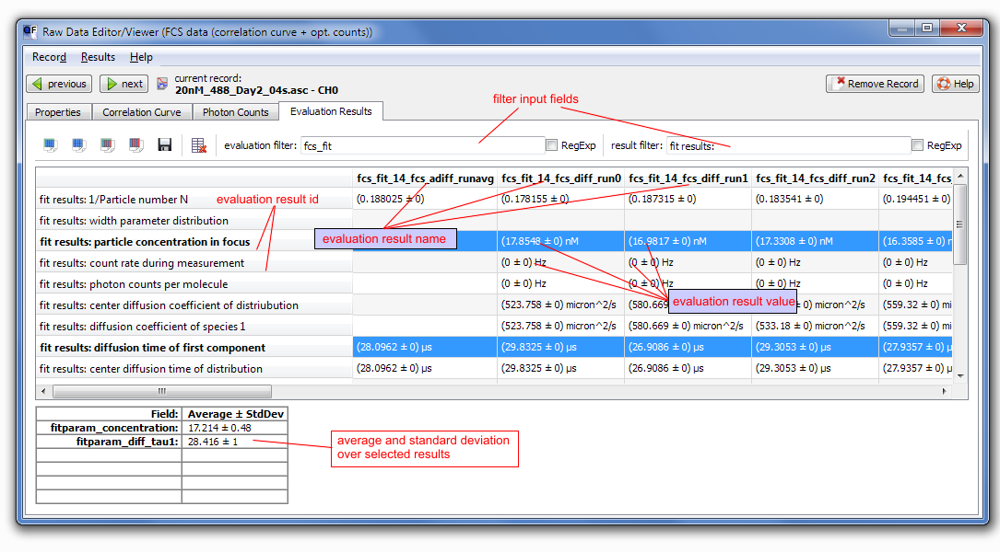

This page describes the basic features any raw data record screen implements.
In the head-line of this dialog you will find two buttons and that allow to move to the next and previous record of the same type. The button allows to delete the current record from the project. Between the buttons QuickFit displays an icon representing the type of the current record and also its name.
Evaluation Results
The second last tab Evaluation Results may be used to view the results of all evaluation objects that were used together with the current raw data record. These results (but only for one evaluation item) are also visible on the evaluation screen.

Features of the evaluation screen tab:
- The results are shown as a table, where every column represents the set of results for ONE evaluation. Every column is designated by the evaluation result id, which consists of the raw data record name (e.g. 20nM_488_Day2_04s.asc - CH0), the evaluation type name together with the internal ID of the evaluation object (e.g. fcs_fit_1 where 1 is the ID) and an evaluation-dependend suffix (e.g. fcd_diff1_run0) . Every row shows the single results (if they are numbers or strings).
- average and standard deviation over the currently selected cells will be sidplayed as a second table below the results table.
- If a cell contains not a single value or value/error pair it might not be possible to display it in a concise form. Usually vectors/matrices are only displayed directly, if they contain less than 10 elements. If there are more items only the data type name is displayed to save space. If the mouse hovers of a vector/matrix field, the average value and standard deviation of the numbers in the list (if applicable) is shown as a tooltip.
- You may select multiple cells in the results table and then copy them to the system clipboard, using the
 button. The clipboard contents may be directly pasted into a text editor or a spreadsheet program (e.g. OpenOffice Calc, or Microsoft Excel). The button
button. The clipboard contents may be directly pasted into a text editor or a spreadsheet program (e.g. OpenOffice Calc, or Microsoft Excel). The button  will copy the data only (no header rows/columns). Using the button
will copy the data only (no header rows/columns). Using the button  instead will also copy the selection, but values and errors are separated into two subsequent rows. This option also copies average and standard deviation of a number list/matrix as value/error.
instead will also copy the selection, but values and errors are separated into two subsequent rows. This option also copies average and standard deviation of a number list/matrix as value/error.
- You may also save the complete table> of results to a data file which is readable by most spreadsheet programs, using the
 button.
button.
- A click on
 will remove the currently selected results from the project.
will remove the currently selected results from the project.
 Help may be used to display this online help message.
Help may be used to display this online help message.
 button to add a new property and
button to add a new property and  to remove the selected proeprty. You may edit the property value directly in the table, but note that some properties may be system-properties and are not editable. Any property you added by hand is editable in any case.
to remove the selected proeprty. You may edit the property value directly in the table, but note that some properties may be system-properties and are not editable. Any property you added by hand is editable in any case.